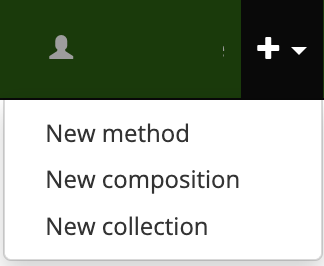
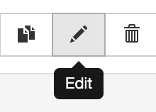
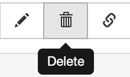

Adding methods
Complib gives registered users the ability to create custom methods.
To get started, click on Create new > New method in the navbar or dropdown menu:


The add method page

The add method page has a number of fields which allow you to specify certain properties of your custom method. These are:
- Name (required)
- The desired name for your custom method. This will be used by Complib to generate the method's full title. See Things to consider when naming methods for advice on choosing a name for your custom method.
Note
Complib automatically appends the method's class descriptors and stage to its name to give the method's full title. As such, you should not add classification- or stage-specific words such as Treble Bob or Caters to the name field.
- Stage (required)
- The stage at which the method is to be rung. Complib supports methods on numbers from two to twenty-eight bells.
- Place Notation (required)
- The method's place notation. This can be specified in either full or condensed form. When verifying the method, Complib will automatically condense the place notation as much as possible. To learn how to use place notation, see Place notation.
- Division Ends (optional)
- For methods requiring divisions, specifies the row numbers at which the ends of each division occur. If the method has multiple divisions per lead, the corresponding division end rows should be separated with a colon (e.g.,
2:8). - Notes (optional)
- Specifies a message to be displayed in the Library Details tab of the custom method's page. This is a good place to put any important information about the method which you may want to keep to hand.
Validating methods, method errors & warnings
Complib will automatically attempt to validate a custom method as soon as its place notation is specified. If the provided place notation is valid, the custom method's full name, diagram and properties will be generated and displayed. Clicking the Validate button will force a re-validation.
If the custom method is successfully validated, clicking the Save button will save the custom method as a private method.
Method errors

If Complib encounters a problem when attempting to validate a custom method, an error message will be displayed. All errors must be cleared before a custom method can be saved.
There are a number of different error types. Most errors will give an indication of how to clear them. The following is a non-exhaustive list of some of the more common examples:
Error: Place notation _ is invalid for stage...
The identified element of place notation is not valid for the specified stage. Usually this means that the place specified in the place notation element does not exist at this stage. For example, attempting to validate the element 18 at stages lower than Major will generate this error.
Error: Method title already used...
The title generated for the custom method conflicts with the title of an already existing method. The custom method's name must be altered so that the generated title is unique.
Error: Method place notation already exists as...
The specified place notation is identical to that of an already existing method. The custom method's place notation must be altered so that it is unique.
Error: Method cannot be classified...
Complib cannot parse the specified place notation. This happens when the specified place notation does not conform to one of the accepted Method XML formats, or is empty. See Place notation to learn more about the place notations that Complib can accept.
Error: Division Ends must be positive and less than the lead length.
The specified division ends exceed the bounds of the method's lead. The division ends must be rows within the lead length of the method as determined from its place notation.
Error: Division Ends must be unique.
For custom methods with multiple divisions, two or more of the specified division ends are identical. All division ends must be unique rows within the method's lead.
Warnings and other messages
If method validation is successful, Complib may display a number of warnings and other messages. These are designed to notify you of any additional information you may wish to take into account when naming your custom method. This information may be redundant.
Unlike method errors, warnings and other alerts will not prevent you from saving a custom method. Some of the warnings and other messages you may encounter include:
Warning: Method title already used at a different stage...
The custom method's generated title is identical to another method of the same class but differing stage. The current Central Council Framework requires that such methods belong to one of the accepted extension paths (see Extensions). While you can save a custom method which does not belong to an accepted extension path, the method will not be able to be accepted under that name when rung.
Warning: Method is related to ___ as a ___ extension...
The custom method's place notation can be obtained from an existing method by following one of the accepted extension paths. When this happens, you will likely wish to give the custom method the same name as the existing method, provided that another method with that name does not already exist at the same stage as the custom method. Additionally, while this is expressed as a warning, there are circumstances under which you are obliged to name a method in accordance with an extension path if you wish to do so officially. See Extensions for an in-depth explanation of this topic.
Information: Method is related to ___...
The custom method is related to an existing method at the same stage. This occurs when the custom method is a halflead/leadend variant, or a Single/Double/Reverse form of the existing method. See Method pages > Related methods for more information about method relationships.
Things to consider when naming methods
Definition: Method names, titles, etc.
A method's title is its full descriptive designation, which consists of its name, its class, and its stage, given in that order.
It is a long-standing tradition of change ringing that anyone can name a method that has not previously been named subsequent to a qualifying performance. When deciding on a name for a custom method, there are a number of things you may wish to bear in mind. While the following guidelines allow a degree of flexibility (with some exceptions), they are widely accepted rules of thumb within the Exercise.
-
- A method's name should be unique.
- Two methods cannot share the same title. Two methods at differing stages cannot share the same name and class, with the exception of methods that are accepted as belonging to the same extension path, or methods whose class is not expressed as part of its title (e.g. hybrid methods and principles).
-
- A method's name should be human-readable and pronounceable.
- A method's name should be something that a human being can read and say aloud. As such, method names should not consist exclusively of punctuation, numerals or other symbols.
-
- A method's name should not contain offensive or abusive language.
- The Exercise of change ringing is for everyone. As such, method names which are offensive or which contain terms considered to be hate speech are extremely likely to be rejected outright, and methods rung under such names will be forcibly renamed before they can be accepted into the Central Council's Method Library.
- While not a formal requirement, it is also worth considering the value of good taste when naming methods. The precise determination of this is, of course, subjective.
-
- A method has not been officially named until it is rung.
- According to tradition, the initial right to determine a method's name is afforded to the band which first rings it in a compliant performance. A custom method which you save to Complib under a certain name may be rung under a different name by someone else, and it is under the latter name that the method will be officially recognised.
You are of course welcome to give a custom method on Complib any name you like. However, if you intend to ring and name a method in a qualifying performance which will be published, it will be expected that you bear these guidelines (or something akin to them) in mind.
Private and public methods
A custom method which is successfully saved to Complib will be designated a private method and given its own method page. As noted above, a private method has not been officially named until it is performed and accepted into the Central Council's Method Library.
When this happens, the method will be automatically added to Complib's CCCBR library. Any private methods which have identical place notation to a newly recognised method will be deleted, and any compositions using such private methods will be automatically changed to use the new public method.
Sharing private methods via link
Under normal circumstances, a private method is only visible to the user who created it. However, you may wish to share your private methods with other people under certain circumstances. Complib gives you the ability to do this by way of a special link which can be generated via the private method's page.
To generate the link, click the Share button at the top right of the private method's page.

This will open a window containing a link in plaintext form which you can copy to your clipboard.
Sharing private methods via published compositions
Another way to share private methods is by publishing a composition which includes the private method as part of its definition (see Adding compositions to learn more about adding and publishing compositions).
Warning
Private methods shared via published compositions will be visible to all registered users, though they will not appear in method searches to anyone other than their owners. Please be sure that you are happy with your private method to be widely available before publishing a composition which uses it.
Editing and deleting methods
To edit a custom method, click on the edit button in the toolbar:

This will open the method in the editor, allowing you to change the name, place notation and other aspects of the method as if you were creating it afresh.
Warning
Be careful about editing custom methods which feature in compositions you have saved. Changing the method's place notation or stage will likely invalidate the compositions in question. Complib does not check to see if any of your private or public compositions will be affected by an alteration made to a custom method. You must make sure to take care of any such cases yourself.
To delete a custom method, click on the delete button:

This will bring up a prompt asking you to confirm that you want to delete the method. If you are sure, clicking on Confirm Delete will mark the custom method for deletion and remove it from your private methods.
Methods marked for deletion can no longer be found via searches, though their pages will remain active for a certain period before being permanently removed, and all links to such pages will still function for the duration of this period.
A method marked for deletion will have a special icon to distinguish it:
Warning
As with editing custom methods, you should bear in mind the effect that deleting a custom method may have on any compositions you have saved.